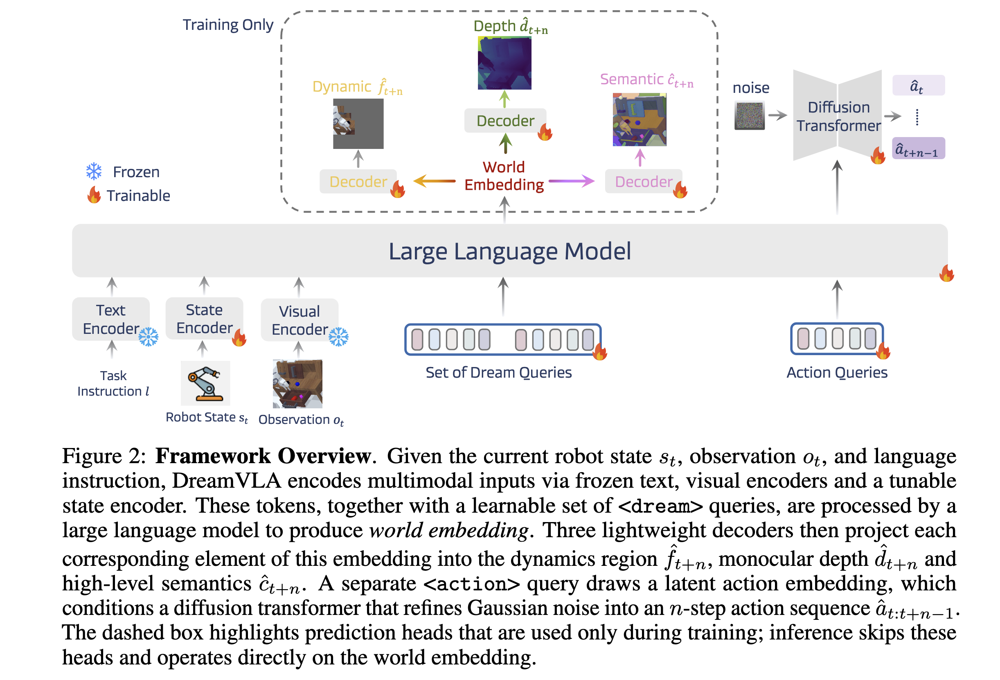

[Paper Note] DreamVLA: A Vision-Language-Action Model Dreamed with Comprehensive World Knowledge
DreamVLA: A Vision-Language-Action Model Dreamed with Comprehensive World Knowledge
Standard VLA models typically map language and vision directly to robot actions.
Predicting the future can be used as a reasoning process to improve VLA capabilities. Common methods include predicting future video frames or trajectories. However, these methods have several drawbacks:
- Redundant pixel information.
- A lack of spatial information.
- Missing high-level understanding of future states, such as semantic information.
Method

Inputs
- Text tokens from CLIP.
- Proprioceptive state.
- Image tokens from a ViT-B pretrained with MAE.
Queries
- Dream Queries: A total of 64 queries used to generate a world embedding. This part predicts future information in the form of embeddings rather than raw images. It predicts the state at frame t+n (a single future frame rather than a sequence).
- Action Queries: The output of these queries serves as the condition for the diffuser that generates the action sequence.
Model Architecture
- The core model is based on GPT-2 Medium.
Loss Functions
- The world embedding is fed into several decoders to predict dynamic regions of the future frame, depth images, and semantic features (using SAM and DINO-v2).
- For dynamic regions, the decoder generates the entire image, but the loss is only calculated for the parts that change.
- During inference, these decoders are not used. The model does not need to reconstruct actual images, which saves computational power.
- ELBO loss is used for dynamic regions to predict a mask of whether a pixel changes.
- L2 loss is used for depth prediction.
- Contrastive loss is used for semantic features.
Attention Mask
- Dynamic, depth, and semantic embeddings cannot attend to each other.
- World embeddings cannot attend to action embeddings.
The model uses an additional action diffusion model because action embeddings and world embeddings share the same latent space and similar statistics, making them difficult to distinguish using a simple MLP.
Experiment
The model was tested on:
- The language-free split of the CALVIN and DROID datasets.
- Training lasted for 20 epochs.
Baselines
- Diffusion Policy
- Octo-Base
- OpenVLA
DreamVLA achieves the highest performance on ABC-D tasks. Real-world experiments for gripper grasping were also conducted on a Franka Panda robot arm.
Ablation Study
Which visual knowledge is most important?
- Dynamic regions have the greatest impact on performance.
- Using only depth, SAM, or DINO leads to a performance drop. These signals may be too noisy or unstable, interfering with the learning process.
Other findings:
- Predicting the future is more effective than reconstructing the current RGB, depth, or semantic data.
- Using shared dream queries for all modalities leads to interference; providing independent queries for each modality is better for performance.
- The number of dream queries matters. Too many or too few can degrade performance. Using 9 queries per modality is a balanced choice.
reference
-
Learning universal policies via text-guided video generation.
-
Robotic control via embodied chain-of-thought reasoning.
-
3d-vla: A 3d vision-language-action generative world model.
-
Any-point trajectory modeling for policy learning
-
Efficient robotic policy learning via latent space backward planning
-
Pixel motion as universal representation for robot control
-
Symbolically-guided visual plan inference from uncurated video data.
-
Dreamgen: Unlocking generalization in robot learning through neural trajectories
-
Predictive inverse dynamics models are scalable learners for robotic manipulation
-
Cot-vla: Visual chain-of-thought reasoning for vision-language-action models
-
Unified world models: Coupling video and action diffusion for pretraining on large robotic datasets
-
Reinbot: Amplifying robot visual-language manipulation with reinforcement learning
-
A generalist agent
-
Navid: Video-based vlm plans the next step for vision-and-language navigation